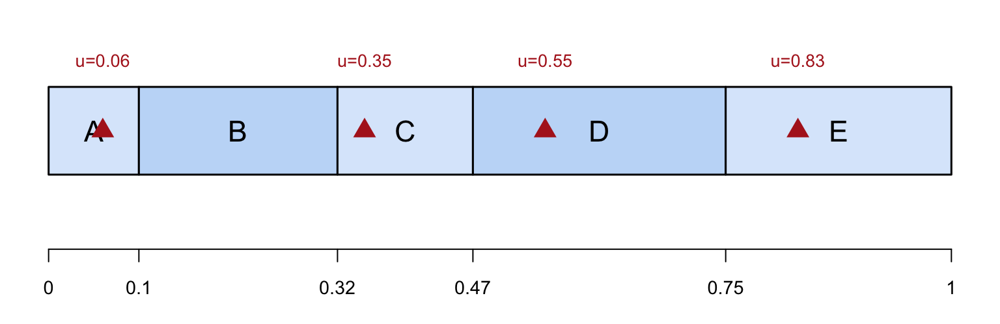

Introduction to Unequal Probability Sampling
2026-10-22
Suppose n>1 and we sample with replacement: the selection probabilities do not change after the first draw. Let \psi_i = P(\text{select unit } i \text{ on any given draw}),\qquad \sum_{i=1}^N\psi_i=1 .
Draw n units with replacement (a unit may be drawn more than once). The sample \mathcal R (not \mathcal S) is the list of the n draws, including repeats: for example, n=10, \mathcal R=\{D,D,D,C,C,D,C,A,B,B\} A common choice, probabilities proportional to size (PPS), with a size variable x_i>0 known for every unit: \psi_i = \frac{x_i}{t_x},\qquad t_x=\sum_{k=1}^N x_k .

Figure 1
Divide [0,1] into segments of length \psi_1,\ldots,\psi_N. Draw u\sim\text{Uniform}(0,1) (red triangles); the segment that u falls into determines the selected unit. In R: sample(1:N, size = n, prob = psi, replace = TRUE).
With \psi_i=x_i/t_x, define for every unit b_i=\frac{y_i}{x_i},\qquad B=\frac{t_y}{t_x}=\frac{\bar y_U}{\bar x_U},\qquad \bar x_U=\frac{t_x}{N}. B=\sum x_ib_i/\sum x_i is the x-weighted mean of the b_i, and \bar y_U=\bar x_U\,B,\qquad t=t_x\,B . Estimating B is enough: build \hat B, then multiply by \bar x_U or t_x.
Let b_j^* be the ratio b of the unit selected on draw j (the star: it is indexed by the draw, so it is random, while b_1,\ldots,b_N are fixed numbers). It is a discrete random variable with distribution
| Unit selected on draw j | 1 | 2 | \cdots | N |
|---|---|---|---|---|
| Value of b_j^* | b_1 | b_2 | \cdots | b_N |
| Probability | \psi_1=x_1/t_x | \psi_2=x_2/t_x | \cdots | \psi_N=x_N/t_x |
Draws are with replacement, so b_1^*,\ldots,b_n^* are IID with this distribution.
E(b_j^*)=\sum_{i=1}^N\psi_i\,b_i=\sum_{i=1}^N\frac{x_i}{t_x}\frac{y_i}{x_i}=\frac{t}{t_x}=B,\qquad S_{b^*}^2=V(b_j^*)=\sum_{i=1}^N\psi_i(b_i-B)^2 . A single draw is unbiased for B, and precise when the b_i are nearly equal, i.e. y_i\propto x_i.
The HH estimator is the mean of the n IID observations b_j^* (the mean of the ratios): \boxed{\hat B_{\mathrm{HH}}=\bar b^*=\frac1n\sum_{j=1}^n b_j^*},\qquad E(\hat B_{\mathrm{HH}})=B, and its variance is that of one draw divided by n. With w_i=x_i/\bar x_U=N\psi_i (relative size), V(\hat B_{\mathrm{HH}})=\frac{S_{b^*}^2}{n}=\frac1n\sum_{i=1}^N\psi_i(b_i-B)^2=\frac{1}{nN}\sum_{i=1}^N w_i\,(b_i-B)^2 . No finite population correction: the draws are independent.
The sample variance of the b_j^* is unbiased for S_{b^*}^2: \boxed{\widehat{\mathrm{SE}}(\hat B_{\mathrm{HH}})=\frac{s_{b^*}}{\sqrt n}},\qquad s_{b^*}^2=\frac{1}{n-1}\sum_{j=1}^n(b_j^*-\bar b^*)^2 .
| Quantity | Estimate | Estimated SE |
|---|---|---|
| Ratio B=t/t_x | \hat B_{\mathrm{HH}} | s_{b^*}/\sqrt n |
| Mean per unit \bar y_U=\bar x_UB | \bar x_U\,\hat B_{\mathrm{HH}} | \bar x_U\,s_{b^*}/\sqrt n |
| Total t=t_xB | t_x\,\hat B_{\mathrm{HH}} | t_x\,s_{b^*}/\sqrt n |
From \hat B_{\mathrm{HH}} (PPS, \psi_i=x_i/t_x, so t_x/x_i=1/\psi_i): \begin{aligned} \hat t_{\mathrm{HH}}&=t_x\hat B_{\mathrm{HH}}\\ &=t_x\,\frac1n\sum_{j=1}^n b_j^*\\ &=\frac1n\sum_{j=1}^n t_x\frac{y_j^*}{x_j^*}\\ &=\frac1n\sum_{j=1}^n\frac{y_j^*}{\psi_j^*} \end{aligned}
Writing the sum over the draws in \mathcal R (repeats included): \hat t_{\mathrm{HH}}=\frac1n\sum_{i\in\mathcal R}\frac{y_i}{\psi_i}=\sum_{i\in\mathcal R}w_i\,y_i, \boxed{w_i=\frac{1}{n\,\psi_i}}
From V(\hat B_{\mathrm{HH}})=S_{b^*}^2/n, using t_xb_i=y_i/\psi_i and t_xB=t, so that t_x(b_i-B)=y_i/\psi_i-t: \begin{aligned} V(\hat t_{\mathrm{HH}})&=t_x^2\,V(\hat B_{\mathrm{HH}})=\frac1n\sum_{i=1}^N\psi_i\,t_x^2(b_i-B)^2\\ &=\boxed{\frac1n\sum_{i=1}^N\psi_i\Big(\frac{y_i}{\psi_i}-t\Big)^2} \end{aligned} Likewise t_x(b_j^*-\bar b^*)=y_j^*/\psi_j^*-\hat t_{\mathrm{HH}}, so the estimated variance t_x^2s_{b^*}^2/n is \hat V(\hat t_{\mathrm{HH}})=\boxed{\frac{1}{n(n-1)}\sum_{j=1}^n\Big(\frac{y_j^*}{\psi_j^*}-\hat t_{\mathrm{HH}}\Big)^2} Both hold for any \psi_i, with no finite population correction.
With an SRS \mathcal S of n units, write y_i=x_ib_i=\bar x_U\,w_ib_i:
Ratio estimator (uses x_i at the estimation stage): \hat B_r=\frac{\sum_{i\in\mathcal S}y_i}{\sum_{i\in\mathcal S}x_i}=\frac{\sum_{i\in\mathcal S}x_i\,b_i}{\sum_{i\in\mathcal S}x_i} the mean of the sampled b_i with weights x_i adding up to one.
Sample average (ignores x_i): \bar y=\bar x_U\hat B_{\mathrm{avg}} with \hat B_{\mathrm{avg}}=\frac{\bar y}{\bar x_U}=\frac1n\sum_{i\in\mathcal S}w_i\,b_i weights w_i that do not add up to one.
| Estimator | Estimator of B | x_i used at | Unbiased? |
|---|---|---|---|
| Sample average (SRS) | \dfrac1n\sum\limits_{i\in\mathcal S}w_ib_i | not used | yes |
| Ratio (SRS) | \dfrac{\sum_{\mathcal S} x_ib_i}{\sum_{\mathcal S} x_i} | estimation stage | slightly biased |
| HH (UPSWR) | \dfrac1n\sum\limits_{j=1}^n b_j^* | design stage | exactly unbiased |
Variances (multiply by \bar x_U^2 for the mean, t_x^2 for the total): \begin{aligned} V(\hat B_{\mathrm{avg}})&=\frac{1-n/N}{n(N-1)}\sum_{i=1}^N (w_ib_i-B)^2\\ V(\hat B_{r})&\approx\frac{1-n/N}{n(N-1)}\sum_{i=1}^N w_i^2\,(b_i-B)^2\\ V(\hat B_{\mathrm{HH}})&=\frac{1}{nN}\sum_{i=1}^N w_i\,(b_i-B)^2 \end{aligned}
Each variance is \frac1n\times the average over the units of one squared term:
| Estimator | Squared term of unit i | Spread of y about |
|---|---|---|
| Sample average | (w_ib_i-B)^2 | the flat line \bar y_U |
| Ratio | w_i^2\,(b_i-B)^2 | the line y=Bx |
| HH | w_i\,(b_i-B)^2 | the line y=Bx, weight 1/w_i relative to ratio |
HH divides the ratio estimator’s term by w_i: units larger than average (w_i>1) are downweighted, smaller ones are upweighted, because large units are already drawn more often. UPSWR wins when the large residuals y_i-Bx_i belong to the large units.
t_x=1600, \bar x_U=400, B=300/1600=0.1875. Sales nearly proportional to floor area:
| Store | x_i | y_i | w_i | b_i | b_i-B | (w_ib_i-B)^2 | w_i^2(b_i-B)^2 | w_i(b_i-B)^2 |
|---|---|---|---|---|---|---|---|---|
| A | 100 | 11 | 0.25 | 0.1100 | -0.0775 | 0.025600 | 0.000375 | 0.001502 |
| B | 200 | 20 | 0.50 | 0.1000 | -0.0875 | 0.018906 | 0.001914 | 0.003828 |
| C | 300 | 24 | 0.75 | 0.0800 | -0.1075 | 0.016256 | 0.006500 | 0.008667 |
| D | 1000 | 245 | 2.50 | 0.2450 | 0.0575 | 0.180625 | 0.020664 | 0.008266 |
| Variance (Sum /N) | 0.0603 | 0.00736 | 0.00557 |
HH < ratio \ll sample average. If the sales were unrelated to the floor area, the ordering reverses (average 0.00078, ratio 0.0288, HH 0.0273): the size variable must be tied to y.
An AI company has N=6 customers; the tokens x_i (millions) are known for all, the revenue y_i (thousand dollars) is only observed for the sampled customers. Draw n=5 customers with replacement, \psi_i=x_i/t_x (t_x=100, \bar x_U=16.67). The sample is \mathcal R=\{F,E,F,D,C\}:
| Draw j | Customer | x_j^* | y_j^* | b_j^*=y_j^*/x_j^* | b_j^*-\bar b^* | (b_j^*-\bar b^*)^2 |
|---|---|---|---|---|---|---|
| 1 | F | 40 | 190 | 4.7500 | -0.1417 | 0.020069 |
| 2 | E | 30 | 155 | 5.1667 | 0.2750 | 0.075625 |
| 3 | F | 40 | 190 | 4.7500 | -0.1417 | 0.020069 |
| 4 | D | 15 | 70 | 4.6667 | -0.2250 | 0.050625 |
| 5 | C | 8 | 41 | 5.1250 | 0.2333 | 0.054444 |
| Sum | 24.4583 | 0 | 0.220833 |
\hat B_{\mathrm{HH}}=\bar b^*=\frac{24.4583}{5}=4.8917,\qquad s_{b^*}^2=\frac{0.220833}{4}=0.055208,\quad s_{b^*}=0.2350
| Quantity | Estimate | Estimated SE |
|---|---|---|
| Revenue per million tokens B | 4.8917 | 0.2350/\sqrt5=0.1051 |
| Mean revenue per customer | 16.67\times4.8917=81.53 | 16.67\times0.1051=1.75 |
| Total revenue | 100\times4.8917=489.2 | 100\times0.1051=10.5 |
In R: upswr_est(ydata, xdata, xbar_pop, tx_pop, method = "ratio") with method equal to "ratio", "mean" or "total" returns the estimate, SE and CI.
Clusters (psus) are the units: y_i\to t_i (cluster total), x_i\to M_i (cluster size), t_x\to M_0=\sum_{i=1}^NM_i,\qquad \bar x_U\to\bar M_U=\frac{M_0}{N},\qquad \psi_i=\frac{M_i}{M_0}. The ratio of cluster i is its mean per element (ssu-level mean) b_i=\frac{t_i}{M_i}=\bar y_i ,\qquad B=\frac{t}{M_0}=\bar y_U\ \ (\text{mean per element}).
Then \hat B_{\mathrm{HH}}=\bar b^*=\dfrac1n\sum_{j=1}^n\bar y_j^*: the plain average of the sampled cluster means (large clusters are already selected more often), with \widehat{\mathrm{SE}}=s_{b^*}/\sqrt n.
| Quantity | Estimate | Estimated SE |
|---|---|---|
| Mean per element \bar y_U=B | \hat B_{\mathrm{HH}} | s_{b^*}/\sqrt n |
| Mean per cluster t/N | \bar M_U\,\hat B_{\mathrm{HH}} | \bar M_U\,s_{b^*}/\sqrt n |
| Total t | M_0\,\hat B_{\mathrm{HH}} | M_0\,s_{b^*}/\sqrt n |
N=40 homes, M_0=3000 residents (\bar M_U=75). n=8 draws with \psi_i=M_i/M_0; every resident of a selected home is reviewed (t_i = falls in the home). Home H12 is drawn twice (same t_i):
| j | Home | M_j^* | t_j^* | b_j^*=t_j^*/M_j^* |
|---|---|---|---|---|
| 1 | H12 | 180 | 160 | 0.8889 |
| 2 | H03 | 60 | 49 | 0.8167 |
| 3 | H27 | 240 | 205 | 0.8542 |
| 4 | H12 | 180 | 160 | 0.8889 |
| 5 | H31 | 95 | 70 | 0.7368 |
| 6 | H08 | 120 | 118 | 0.9833 |
| 7 | H19 | 45 | 30 | 0.6667 |
| 8 | H36 | 150 | 140 | 0.9333 |
| Sum | 6.7688 |
\hat B_{\mathrm{HH}}=6.7688/8=0.8461 falls per resident, s_{b^*}=0.1036, \widehat{\mathrm{SE}}=0.1036/\sqrt8=0.0366.
| Quantity | Est. | SE |
|---|---|---|
| per resident | 0.846 | 0.037 |
| per home (\times75) | 63.5 | 2.7 |
| total (\times3000) | 2538 | 110 |
Select n clusters with replacement, \psi_i=M_i/M_0, then take an SRS of m_i elements from the cluster on every draw: a cluster drawn twice gets two independent subsamples. The cluster mean b_i=t_i/M_i is not observed, but estimated by the subsample mean \bar y_i, and \hat t_i=M_i\bar y_i.
The one-stage formulas carry over with \bar y_j^* (subsample mean of draw j) in place of b_j^*: \hat B_{\mathrm{HH}}=\bar y^*=\frac1n\sum_{j=1}^n\bar y_j^*,\qquad \widehat{\mathrm{SE}}(\hat B_{\mathrm{HH}})=\frac{s_{\bar y^*}}{\sqrt n},\qquad s_{\bar y^*}^2=\frac{1}{n-1}\sum_{j=1}^n(\bar y_j^*-\bar y^*)^2 , mean per cluster \bar M_U\hat B_{\mathrm{HH}} and total M_0\hat B_{\mathrm{HH}} with SEs multiplied by the same constants (each draw estimates the total by \hat t_j^*/\psi_j^*=M_0\bar y_j^*).
Note
No second-stage variance formula is needed: the draws are independent, and s_{\bar y^*}^2 captures both the choice of clusters and the choice of elements within them.
Same eight draws, but m_j^*=20 residents are sampled per draw (15 for H19), recording their falls. H12 is drawn twice, with different subsample means:
| j | Home | M_j^* | m_j^* | Falls | \bar y_j^* |
|---|---|---|---|---|---|
| 1 | H12 | 180 | 20 | 19 | 0.950 |
| 2 | H03 | 60 | 20 | 15 | 0.750 |
| 3 | H27 | 240 | 20 | 16 | 0.800 |
| 4 | H12 | 180 | 20 | 16 | 0.800 |
| 5 | H31 | 95 | 20 | 18 | 0.900 |
| 6 | H08 | 120 | 20 | 21 | 1.050 |
| 7 | H19 | 45 | 15 | 10 | 0.667 |
| 8 | H36 | 150 | 20 | 17 | 0.850 |
| Sum | 6.767 |
\hat B_{\mathrm{HH}}=6.767/8=0.846, s_{\bar y^*}=0.120, \widehat{\mathrm{SE}}=0.120/\sqrt8=0.0425.
| Quantity | Est. | SE |
|---|---|---|
| per resident | 0.846 | 0.042 |
| per home (\times75) | 63.4 | 3.2 |
| total (\times3000) | 2538 | 127 |
Select n distinct units with inclusion probabilities \pi_i=P(i\in\mathcal S), \sum_{i=1}^N\pi_i=n. For \pips, \pi_i=n\,x_i/t_x=n\psi_i. The Horvitz-Thompson (HT) estimator weights each unit by 1/\pi_i: \boxed{\hat t_{\mathrm{HT}}=\sum_{i\in\mathcal S}\frac{y_i}{\pi_i}} Unbiased: with I_i=1 if i\in\mathcal S (and E(I_i)=\pi_i), \hat t_{\mathrm{HT}}=\sum_{i=1}^N I_i\,y_i/\pi_i and E(\hat t_{\mathrm{HT}})=\sum_{i=1}^N\frac{y_i}{\pi_i}E(I_i)=\sum_{i=1}^N y_i=t .
Mean per unit: \hat t_{\mathrm{HT}}/N. With \pi_i\propto x_i, the ratio is the HT total over t_x: \hat B_{\mathrm{HT}}=\frac{\hat t_{\mathrm{HT}}}{t_x}=\frac1n\sum_{i\in\mathcal S}b_i , \qquad \widehat{\mathrm{SE}}(\hat B_{\mathrm{HT}})=\frac{\widehat{\mathrm{SE}}(\hat t_{\mathrm{HT}})}{t_x}.
With joint inclusion probabilities \pi_{ij} (fixed sample size), Sen-Yates-Grundy: \hat V_{\mathrm{SYG}}=\frac12\sum_{i\in\mathcal S}\sum_{j\in\mathcal S}\frac{\pi_i\pi_j-\pi_{ij}}{\pi_{ij}}\Big(\frac{y_i}{\pi_i}-\frac{y_j}{\pi_j}\Big)^2 . Approximations that need only \pi_i, with u_i=y_i/\pi_i:
For the mean divide the SE by N; for \hat B_{\mathrm{HT}} divide by t_x.
N=20 units, a sample of n=4 units with inclusion probabilities \pi_i:
| i | y_i | \pi_i | u_i=y_i/\pi_i | (1-\pi_i)u_i | (1-\pi_i)(u_i-A)^2 | (u_i-\hat t_{\mathrm{HT}}/n)^2 |
|---|---|---|---|---|---|---|
| 1 | 12 | 0.10 | 120.00 | 108.00 | 17.08 | 12.8 |
| 2 | 30 | 0.20 | 150.00 | 120.00 | 526.1 | 698.5 |
| 3 | 40 | 0.35 | 114.29 | 74.29 | 65.9 | 86.2 |
| 4 | 33 | 0.30 | 110.00 | 77.00 | 144.3 | 184.2 |
| Sum | 494.29 | 379.29 | 753.4 | 981.6 |
\hat t_{\mathrm{HT}}=494.29, mean 494.29/20=24.71; A=379.29/3.05=124.36, and
\hat V_{\mathrm H}=\tfrac43\times753.4=1004.5\ (\mathrm{SE}=31.7),\qquad \hat V_{\mathrm{WR}}=\tfrac43\times981.6=1308.8\ (\mathrm{SE}=36.2). SE of the mean: 31.7/20=1.58 (Hájek), 36.2/20=1.81 (WR).
The gain depends on the ratios b_i=y_i/x_i being nearly constant, i.e. y_i roughly proportional to x_i. Otherwise,
UPS is used mostly when the size is a good proxy of what is measured: selecting the clusters of a multi-stage survey proportional to households or students, auditing by monetary value, surveys of establishments by employment. If the size is only loosely related to y, use SRS or stratified sampling, with a ratio or regression estimator if x_i is known.
For sampling without replacement, the weight is the reciprocal of the inclusion probability, 1/\pi_i. For sampling with replacement, we use the first-stage weight w_i = \frac{1}{E[Q_i]} = \frac{1}{n\psi_i}, where Q_i is the number of times unit i occurs in \mathcal R. For one-stage cluster sampling, w_{ij}=1/(n\psi_i) for every ssu j in psu i, and \hat t_{\mathrm{HH}} = \sum_{i\in\mathcal R}\sum_{j=1}^{M_i} w_{ij}y_{ij}, \qquad \hat{\bar y}_U = \frac{\sum_{i\in\mathcal R}\sum_{j=1}^{M_i} w_{ij}y_{ij}}{\sum_{i\in\mathcal R}\sum_{j=1}^{M_i} w_{ij}} . For two-stage sampling with an SRS of m_i ssus, the weight has the extra factor M_i/m_i.